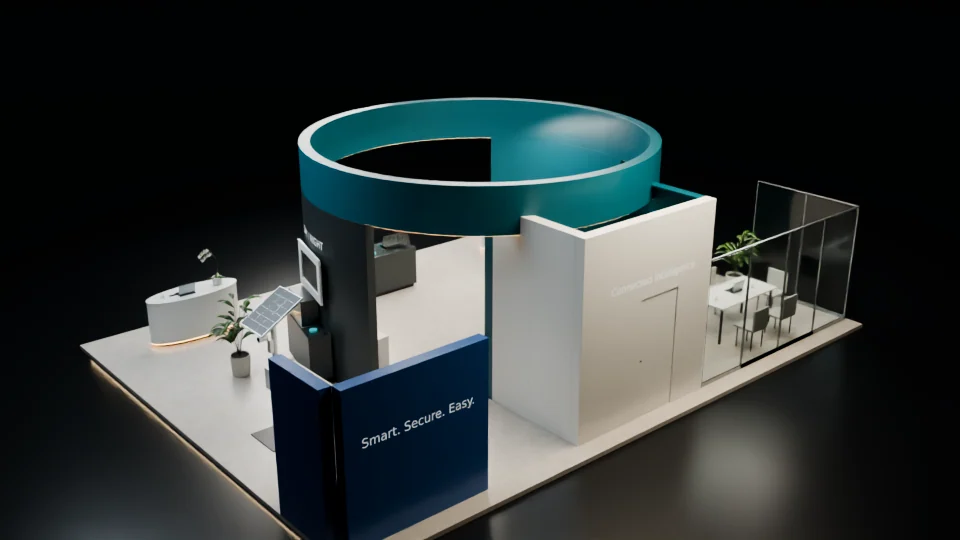

Supplied layout preserved
Delivery notes identify the original FBX layout as unchanged.
Materials, lighting and cameras around supplied geometry.
Explore the storyImprove the presentation of an existing exhibition model while keeping its layout intact.
Surface and normal repair support material treatment, screen imagery and lighting. Six presentation cameras provide different readings of the supplied exhibition structure.
Delivery notes identify the original FBX layout as unchanged.
The documented changes include materials, lights, screen imagery, props and normal repair.
A native cinematic Blender scene accompanies six documented presentation cameras.
Explore the complete compositions and interface states. Select any image for a closer look.
03 / PROJECT IMAGES
Select a view to explore.
A complete exhibition layout with a teal circular display structure, curved reception desks, product stations and a glass meeting lounge.
A front-right native view of the circular teal booth, demo stations, reception counters and meeting area.
A rear native view of the circular booth with a service door, rear partitions and a glass meeting area.

Structure, interaction and visual decisions that give the work its character.
RoleScene preparation, material/lighting treatment and presentation rendering; confirm which parts were personally created or directed.
AssetsThe base exhibition layout/model and product models remain separately credited supplied components. Native scene treatment, material, lighting and visualization contributions require confirmation; this image does not establish original geometry authorship or a delivered installation. Personal contribution and public-use clearance remain pending.
StatusPrivate source-grounded draft. Documented behavior and inspected code are distinguished from untested runtime and delivery.